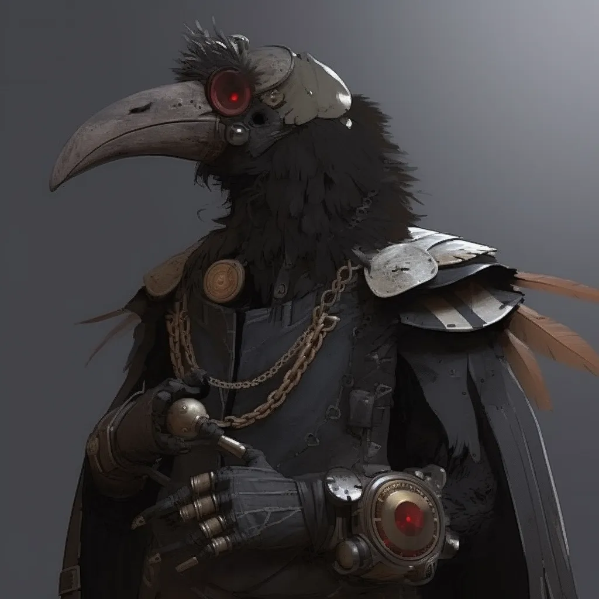

Ancestry: Tengu (Jinxed)Class: InventorLevel: 5Background: Saved by ClockworkPronouns: they / them

⚙
'">
Tepshe
— ⚙ —
I. Overview
Tepshe is a 5th-level Jinxed Tengu Inventor with the Saved by Clockwork background. They are unarmoured and carry no shield. Deity, alignment, size, traits, and languages are not specified on the character sheet.
No specific melee or ranged Strike entries are filled in on the character sheet. No resistances, immunities, or active conditions are listed.
IV. Skills
Acrobatics+10
Arcana+3
Athletics+11
Crafting+12
Deception+0
Diplomacy+0
Intimidation+0
Medicine+8
Nature+1
Occultism+3
Performance+7
Religion+1
Society+10
Stealth+10
Survival+8
Thievery+12
No Lore skills are listed on the character sheet.
V. Ancestry & Heritage
Jinxed Tengu
Heritage 1st
Scavenger's Search
Ancestry Feat 1st · Tengu
Magpie Snatch
Ancestry Feat 5th · Tengu
Mechanical descriptions of these feats are not reproduced here; refer to the official Pathfinder 2e ancestry rules.
VI. Class Features & Feats
Features
Explode
Feature 1st · Inventor
Peerless Inventor
Feature 1st · Inventor
Expert Overdrive
Feature 3rd · Inventor
Inventor Weapon Expertise
Feature 5th · Inventor
Class Feats
Tamper
Feat 1st · Inventor
Collapse Construct
Feat 2nd · Inventor
Advanced Construct Companion
Feat 4th · Inventor
Innovation
The presence of Collapse Construct and Advanced Construct Companion indicates a Construct Innovation. The player recalls the construct may have been a mechanical bird, though this is not confirmed on the sheet.
Mechanical descriptions of these features and feats are not reproduced here; refer to the official Pathfinder 2e Inventor class rules.
VII. Skill, General & Bonus Feats
Skill Feats
Assurance (Crafting)
Skill Feat 2nd
Snare Crafting
Skill Feat 4th
General Feats
Prescient Planner
General Feat 3rd
Bonus Feats
Shield Block
Bonus Feat
Inventor
Bonus Feat
The character sheet lists "Background" in the Skill Feats column without a specified entry. Mechanical descriptions are not reproduced; refer to the official Pathfinder 2e rules.
VIII. Inventory
Worn Items
Item
Invested
Bulk
Unarmoured
—
—
Other Items
Item
Quantity
Bulk
Net Launcher
1
1
Grappling Gun
1
1
Binding Snare
1
0
Clockwork Chirper
2
0
Purple Evening Gown
1
1
Bulk & Currency
3
Current Bulk
9
Encumbered At
14
Maximum Bulk
15 gp
Currency
No Readied Items are listed on the character sheet. CP, SP, and PP are all 0.
IX. Character Details
Personality & Description
— Not Specified On Character Sheet —
Attitude, beliefs, likes, dislikes, catchphrases, appearance, ethnicity, nationality, birthplace, age, height, and weight are all blank on the sheet.
Connections
— Not Specified On Character Sheet —
Allies, enemies, and organisational affiliations are not listed.
X. Campaign Notes
Convention One-Shot
A single-session adventure involving social intrigue and mystery at a theatre, which escalated when portals began admitting demons into the venue.